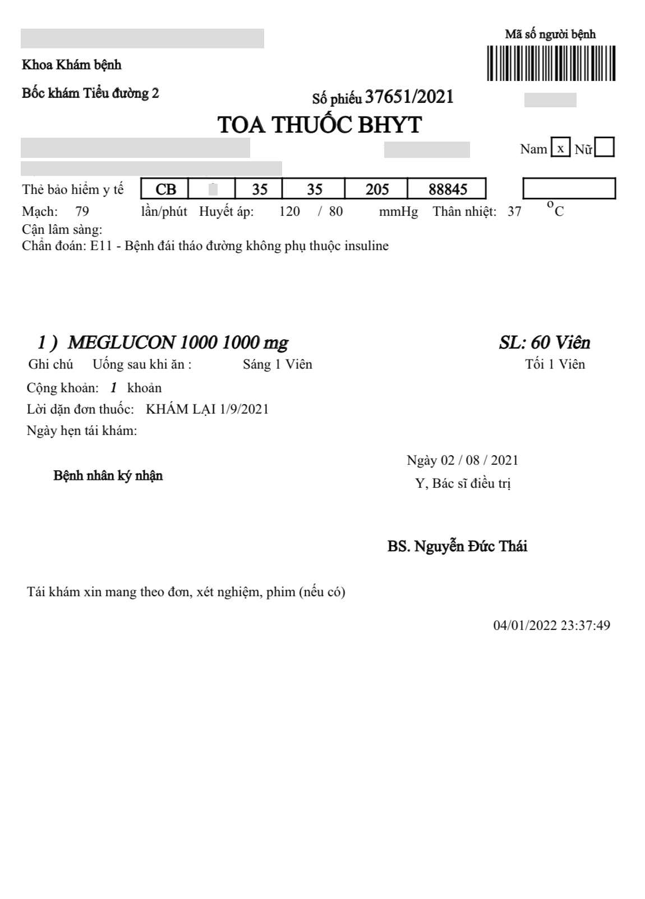
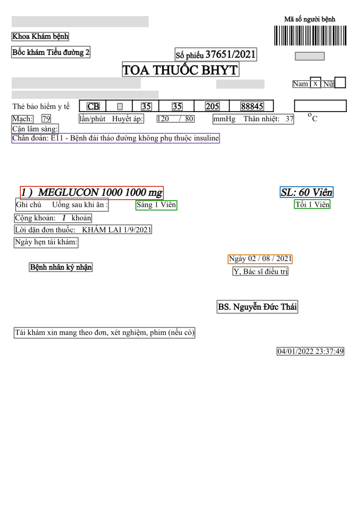
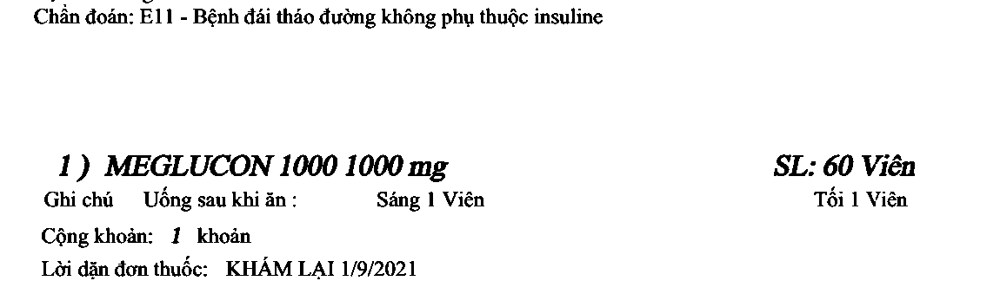
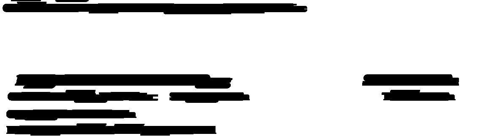
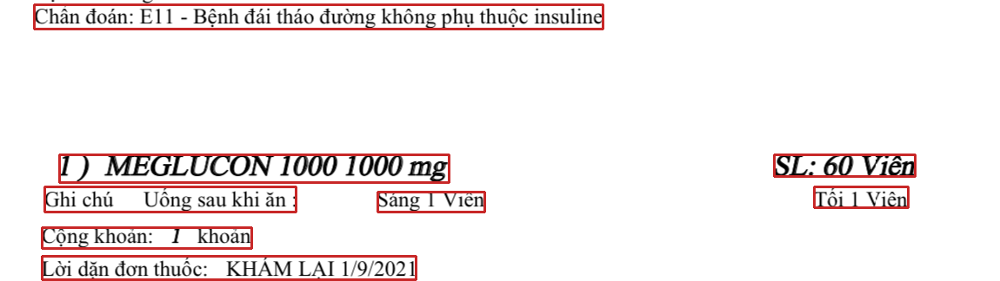
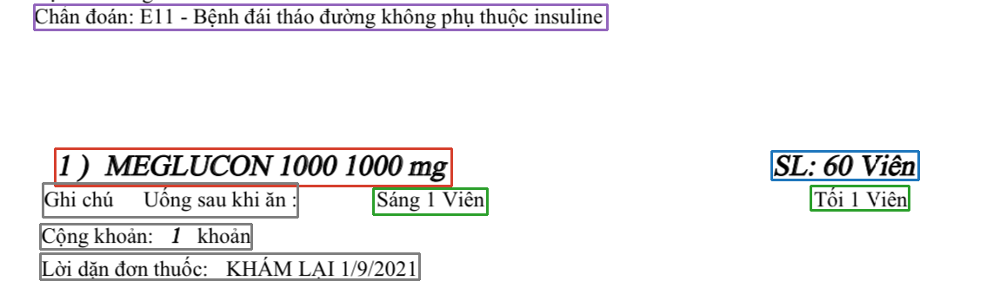

{ "items": [
{ "name": "MEGLUCON 1000 1000 mg",
"quantity": 60, "unit": "Viên",
"usage": ["Sáng 1 Viên", "Tối 1 Viên"] } ],
"diagnose": "E11 - Bệnh đái tháo đường không phụ thuộc insuline",
"date": "02/08/2021" }

| Tập | Ảnh | Vùng chữ | Dùng để |
|---|---|---|---|
| Huấn luyện | huấn luyện mô hình | ||
| Kiểm định | chọn tham số, ngưỡng | ||
| Kiểm tra | số liệu cuối, chạy 1 lần |
| Khối | Kỹ thuật của học phần | Chương |
|---|---|---|
| A | Canny, lược đồ chiếu, phép đóng, lọc trung vị, CLAHE | [3, 5, 7] |
| B | Sauvola (ngưỡng cục bộ), phép giãn, thành phần liên thông | 5, 7 |
| C | Phóng to nội suy bậc ba, nhị phân hóa | [2, 5] |
| Bước | Kỹ thuật | Tham số | Ch. |
|---|---|---|---|
| 1. Nắn phối cảnh | Canny + đường bao 4 góc | 5 | |
| 2. Chỉnh nghiêng | Tối đa phương sai lược đồ chiếu ngang | 5 | |
| 3. Khử bóng | Nền = phép đóng; chia ảnh cho nền | 7 | |
| 4. Khử nhiễu | Lọc trung vị | 3 | |
| 5. Tăng tương phản | CLAHE | 3 |
conf = : F1 trung bình 6 lớp lớn nhất trên tập kiểm định


| Phương án (E-B1) | P | R | F1 | Giây/ảnh |
|---|---|---|---|---|
| Cổ điển | ||||
| YOLOv8s, bỏ nhãn lớp | ||||
| YOLOv8s, đúng lớp |
E-B2: F1 từng lớp ≥ với cả 6 lớp · mAP50 = · mAP50-95 =

Đánh giá trên vùng cắt theo khung chuẩn → tách riêng lỗi của khối C.
vie, phóng ×2 nội suy bậc bach. 2| Phương án (E-C1) | CER | CER drugname | CER quantity | ms/vùng |
|---|---|---|---|---|
| C0 Tesseract, xám | ||||
| C1 Tesseract, nhị phân | ||||
| C2 VietOCR huấn luyện sẵn | ||||
| C3 VietOCR tinh chỉnh |
SL: (\d+)| Pipeline (E-D2) | F1 khoản | KTC 95 % | Đơn đúng | s/ảnh |
|---|---|---|---|---|
| (i) Cổ điển + Tesseract | ||||
| (ii) YOLO + Tesseract | ||||
| (iii) YOLO + VietOCR | ||||
| (v) VLM zero-shot |
| Khối B | Khối C | F1 khoản |
|---|---|---|
| dự đoán | dự đoán | |
| chuẩn | dự đoán | |
| dự đoán | chuẩn | |
| chuẩn | chuẩn |